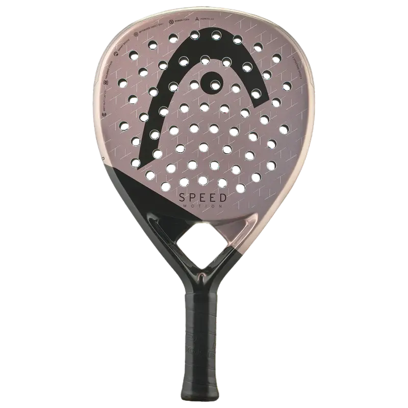
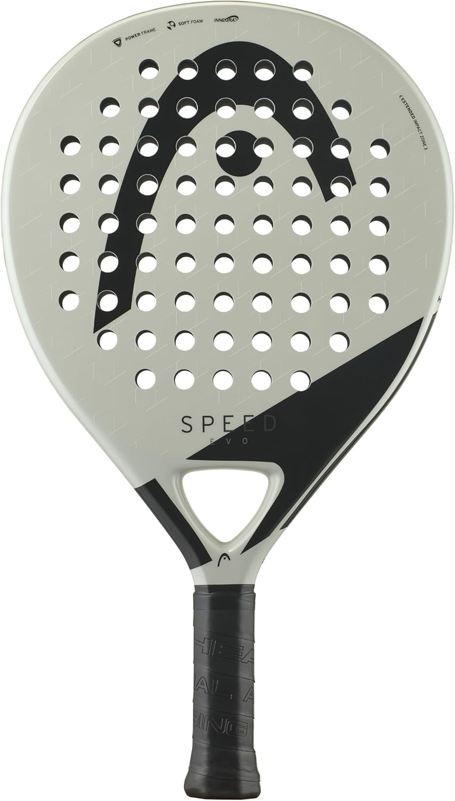
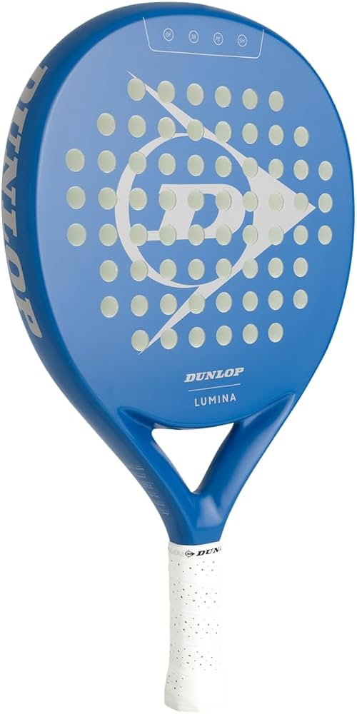
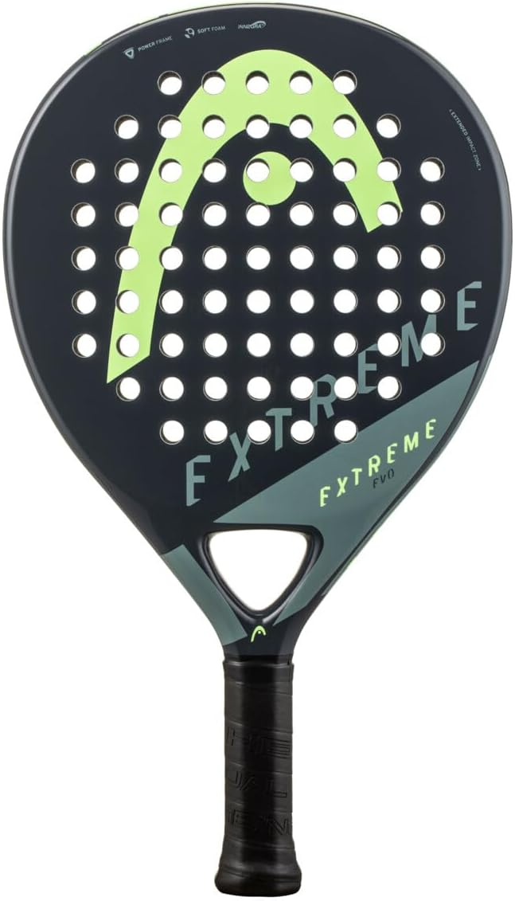
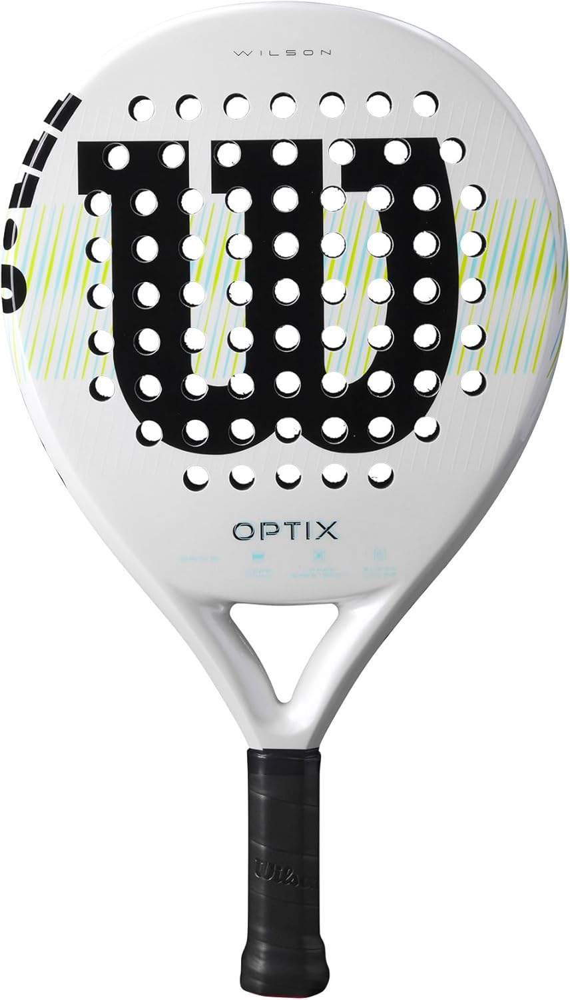

Just bought your first paddle pair and need a racket? Welcome — this is genuinely one of the easier sports to get started in, but the choice of rackets is overwhelming. We tested 6 of the best beginner rackets in the UK for 2026 and ranked them honestly across power, control and touch. No brand favouritism, no fluff — just the ones worth your money for your first racket. PadelRate is independent — no brand deals, no sponsorships. If a racket isn't worth the money, we say so.
| # | Racket | Score | Price | Shape | Face | Best for |
|---|---|---|---|---|---|---|
| 01 | Head Speed Motion | 81 | £129 | Teardrop | Fibreglass | Best overall |
| 02 | Raquex Eclipse | 80 | £69 | Round | Carbon | Best value |
| 03 | Head Evo Speed | 79 | £79 | Teardrop | Fibreglass | Arm comfort |
| 04 | Dunlop Lumina | 78 | £89 | Hybrid Round | Fibreglass | Amazon pick |
| 05 | Head Extreme Evo | 77 | £74 | Teardrop | Fibreglass | Lightest |
| 06 | Wilson Optix V1 | 76 | £74 | Round | Fibreglass | Max forgiveness |
Head Speed Motion

Head have long been respected in padel for building rackets that feel accessible without feeling cheap, and the Speed Motion is their benchmark beginner frame. It earns its place at the top of this list through two numbers: a control score of 88 and a touch score of 90. Those are genuinely exceptional for a beginner-focused racket — and they translate directly into a more enjoyable learning experience on court.
The teardrop shape positions the sweet spot above the centre of the frame, adding drive potential over a pure round while remaining forgiving enough for developing players. The EVA Soft core absorbs energy in a way that keeps the ball on the face a fraction longer, giving you a cushioned, connected feel on every shot. The low balance point keeps the weight centralised so the racket swings quickly without demanding strength or perfect timing. Put simply, this racket is designed to make padel easier to learn — and it succeeds.
The one consideration is price. At £129, the Speed Motion sits above every other racket on this list and creeps towards the lower end of the intermediate bracket. If budget is a concern, the Raquex Eclipse at £69 delivers impressive control at a much lower price. But if you can stretch to £129, the Speed Motion's feel advantage is worth it — especially for complete beginners who will spend their first months playing at the net where touch matters most.
Pros
- Highest control (88) and touch (90) scores in this bracket
- Round shape with centred sweet spot — maximum forgiveness
- EVA Soft core is gentle on the arm and elbow
- Head build quality will last through a full season
Cons
- Most expensive on this list at £129
- Low power ceiling limits usefulness at intermediate level
- Plain visual design compared to higher-end Head models
Raquex Eclipse

The Raquex Eclipse is a standout result in this guide. A UK-designed, full carbon padel racket that scores 87 on control and 86 on touch at £69 is difficult to argue with. That control score is only one point below the Head Speed Motion, which costs nearly twice as much. For a beginner on a tight budget, the Eclipse is the smartest purchase on this list.
Raquex is a small UK-based brand, which means lower overheads and more value packed into the frame itself rather than marketing spend. The round shape and low balance deliver the same beginner-friendly geometry as the Speed Motion — central sweet spot, forgiving mishit response, easy to swing. The full carbon face is a notable advantage over most sub-£100 competitors, which typically use fibreglass. Carbon is stiffer, which generates marginally more energy transfer on clean strikes.
The Eclipse scores just one point below the Speed Motion overall, but the price difference is £60. If you are not certain padel will stick as a regular habit, or if you simply want to minimise the upfront commitment, the Eclipse is the racket we would recommend without hesitation.
Pros
- Exceptional value — 80/100 score at just £69
- Full carbon face rare at this price
- Control score of 87 rivals rackets twice the price
- UK-designed with solid build quality
Cons
- Raquex is a smaller brand — less widely stocked in UK shops
- Round shape limits power development as you improve
- Touch score (86) slightly below the Speed Motion (90)
Head Evo Speed

If you have any history of tennis elbow, shoulder pain, or general arm sensitivity, the Head Evo Speed should be near the top of your list. It uses Innegra — a high-performance polymer fibre woven into the frame that absorbs vibration and impact — making it the most arm-friendly racket in this lineup.
The teardrop shape is oversized compared to typical teardrops, increasing the effective sweet spot area and pulling the forgiveness profile closer to a round racket. This makes it a sensible option for beginners who want a small step up in hitting power over a pure round, without sacrificing too much forgiveness. The Innegra core pair with an EVA base that keeps the touch score at 86 — joint-highest in the sub-£100 tier alongside the Raquex Eclipse.
At £79, the Evo Speed is a fair-priced middle ground: better arm protection than the cheaper round options, more power potential than a pure beginner round, and Head reliability throughout.
Pros
- Innegra technology reduces vibration — essential for arm issues
- Oversized teardrop balances forgiveness with more hitting area
- Joint-highest touch score in the sub-£100 bracket (86)
- Head quality at an accessible price
Cons
- Fibreglass face limits the power ceiling
- Teardrop is marginally less forgiving than round alternatives
- Costs slightly more than the equally-scored Raquex Eclipse
Dunlop Padel Bat Lumina

The Dunlop Lumina is exclusively available on Amazon, which means fast UK delivery, straightforward returns, and the confidence of buying from a major retailer. For beginners who prefer not to navigate specialist padel shops, that accessibility has real value.
The hybrid head sits between round and teardrop — wider at the top than a pure round, which expands the usable hitting zone slightly. Dunlop's Pro EVA core delivers a consistent, predictable feel across all areas of the face: you always know roughly what you are going to get, which is exactly what you need when you are still learning timing and footwork. Build quality across the frame and grip is solid — Dunlop's manufacturing standards are well established across racket sports.
The scoring places it fourth in this ranking, just below the Evo Speed. The Lumina's control and touch scores (82 and 80) are good but not exceptional relative to its price. The main reason to choose it over the Eclipse or Evo Speed is the Amazon availability and Dunlop brand recognition.
Pros
- Amazon Prime eligible — fast delivery, easy returns
- Trusted Dunlop brand with proven quality control
- Hybrid head shape adds hitting area over a pure round
- Consistent Pro EVA feel across the whole face
Cons
- Amazon-only means no in-store demo
- Control and touch scores lower than similarly-priced alternatives
- Fibreglass face limits long-term performance ceiling
Head Extreme Evo

The Head Extreme Evo is the lightest frame on this list at 350g — five grams lighter than most competitors. That may not sound significant, but over the course of a 90-minute session, the cumulative arm fatigue difference is real. This makes it the natural choice for juniors, players with smaller frames, or adults who are returning from an arm or shoulder injury and need to minimise load.
Beyond its weight advantage, the Extreme Evo is a competent beginner racket. The teardrop shape gives a marginally larger sweet spot in the upper zone compared to a round frame, and the soft EVA core keeps things comfortable. Scores are solid across the board at 77 overall, though control (80) and touch (78) fall below the Raquex Eclipse and Evo Speed at similar price points.
Choose the Extreme Evo specifically for the weight reduction. If weight is not a primary concern, the Raquex Eclipse at £69 delivers better scores at a lower price.
Pros
- Lightest racket in this lineup at 350g
- Ideal for juniors, smaller builds, or injury management
- Head reliability and build consistency
- Reasonable price at £74
Cons
- Lower control and touch scores than same-price competitors
- No Innegra technology for vibration dampening
- Fibreglass face limits performance ceiling
Wilson Optix V1

Wilson is one of the most respected names in racket sports globally, and the Optix V1 brings that credibility to the padel entry market. Its Ultra Foam core is the softest compound in this lineup — softer even than the EVA Soft variants in the Head models. This produces the widest effective sweet spot of any racket reviewed here, meaning mishits feel gentler and the ball still travels usefully even when struck off-centre.
The control score of 84 and touch of 85 are both solid, reflecting the foam's cushioning effect on the ball. For a complete beginner whose primary goal is simply keeping the ball in play and learning the rhythm of the game, those qualities matter more than the modest power score of 68.
The trade-off is that the ultra-soft core can feel slightly dead compared to firmer alternatives — shots lack the crisp snap that a carbon face or harder EVA would provide. For a beginner this rarely matters, but it is worth knowing if you want a racket that will feel satisfying to strike from the first session.
Pros
- Wilson global brand trust and quality assurance
- Ultra Foam core is the most forgiving in this guide
- Good control (84) and touch (85) scores
- Oversized round sweet spot helps complete beginners
Cons
- Lowest power score in this lineup at 68
- Ultra Foam can feel muted compared to firmer cores
- Raquex Eclipse scores better at the same price
How to Choose Your First Racket
Shape: always start round
Shape is the most important variable when choosing a beginner racket, and the answer is simple: start round. A round racket has its sweet spot positioned at the centre of the frame — the most forgiving position possible. When you mishit (and as a beginner, you will mishit constantly — that is normal), the ball still travels usefully. A round racket lets you focus on learning footwork, positioning and timing without punishing minor technique errors.
Teardrop shapes are a reasonable choice if you have played a handful of times and feel ready for slightly more power. All other shapes — diamond in particular — should be avoided entirely at beginner level. For more detail on shapes and how they affect play, read our full shape guide.
Weight: lighter is better early on
Most beginner rackets weigh between 350g and 365g. Within that range, lean lighter. A lighter racket is easier to swing repeatedly through long sessions, reduces fatigue, and is more manoeuvrable at the net. The difference between 350g and 365g sounds trivial but accumulates over two hours of play. As your strength and technique improve over months, you can handle more weight — but start easy.
Core: softer is more forgiving
Beginner rackets universally use soft EVA or HR foam cores. This is the right call: softer cores cushion the ball, give better feel, and are kinder on the elbow and shoulder. If you have any history of tennis elbow or arm pain, specifically look for rackets with vibration dampening technology — the Head Evo Speed's Innegra compound is the best example in this price range.
Budget: what to spend
Spend between £69 and £130 on your first racket. Below £69, build quality starts to suffer in ways that affect durability and feel. Above £130 as a beginner, you are paying for performance your technique cannot yet unlock. The sweet spot is £69 to £90 for value buyers (Raquex Eclipse, Head Evo Speed) or up to £129 for the best overall option (Head Speed Motion). Do not spend £200 or more as a beginner — it makes no sense.
What to Avoid as a Beginner
Padel marketing can be convincing. A sleek diamond-shaped pro racket looks impressive and the brand names are familiar. Here is why none of that matters when you are starting out.
Diamond Shapes
Diamond rackets put the sweet spot near the top of the frame. You need to consistently strike the ball in that upper zone to play well with a diamond — a skill that takes months of regular play to develop. Hit off-centre with a diamond and the shot collapses completely. For a beginner, this does not just hurt performance; it actively slows down skill development because you cannot tell whether a bad shot was poor technique or poor racket choice.
Pro-Level & Signature Rackets
Pro rackets — anything described as a player signature model or used on the Premier Padel circuit — are engineered for players who already have elite technique. Their stiff, high-balance frames amplify swing speed and spin, but only if every shot is struck cleanly. As a beginner, you will spend most of your time mishitting, and a stiff pro racket makes every mishit worse. It also transmits more vibration into the arm, increasing the risk of elbow injury.
Rackets Over £200
You do not need to spend more than £130 to get an excellent beginner experience. Rackets over £200 use premium carbon grades, advanced balance systems and refined manufacturing tolerances that only become meaningful when your technique is consistently clean. Spending £280 as a beginner is not buying better performance — it is just spending more money on features you cannot yet use.
Buying Your Coach's Racket
Coaches play with rackets suited to their advanced technique. If your coach smashes with a NOX AT10 Genius 12K (our highest power score at 95), that tells you nothing about what a beginner should buy. Ask your coach for a beginner recommendation specifically — the answer will be completely different from what they play with themselves.
When to Upgrade
A beginner racket is not a life sentence. It is the right tool for the right stage — and knowing when to move on is as important as knowing what to buy first.
0 to 6 months — stay where you are
Your technique is still forming. A beginner racket is actively helping you learn by absorbing your errors rather than punishing them. Upgrading now will slow development, not speed it up.
6 to 12 months — start considering a step up
If you are playing twice a week or more and feeling like the racket is limiting your power or spin — rather than your technique limiting it — you may be ready. The feeling is usually that clean strikes feel "too soft" or that smashes lack the pop you expect. That is the racket's power ceiling, not yours.
12-plus months — time for an intermediate frame
A quality teardrop in the £150 to £220 bracket is the natural next step. The Babolat Technical Viper 3.0 (£199, Score 87) and Oxdog Hyper Pro 2.0 (£179, Score 85) are the best stepping-stone options from a beginner frame. Both reward improving technique with noticeably more power without abandoning forgiveness entirely.
The honest test: if you are regularly striking the ball cleanly and consistently and feeling like the racket is the limitation, it is time to upgrade. If you are still mishitting more than hitting, the racket is not your problem — your technique is, and upgrading will not fix that.
Frequently Asked Questions
- Best Padel Rackets Under £100 UK 2026 — our full ranking of 6 budget rackets, including some on this list
- Padel Racket Shapes Explained — round vs teardrop vs diamond, and which to choose at your level
- Complete Padel Racket Buying Guide — what to look for at every budget from £70 to £350
Browse All 18 Rackets
See our full database of reviewed and scored rackets, filtered by level, budget and playing style. Or read our complete buying guide for a deeper breakdown of shapes, cores and balance.